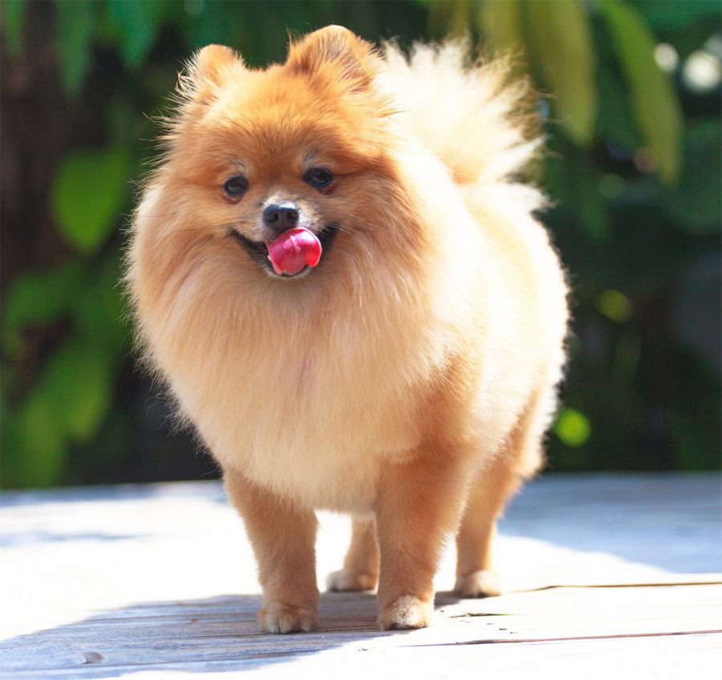

Все и ничего о шпицах
Добро пожаловать

Предлагаем разделить шпицев на разновидности:
- карликовые или миниатюрные — их рост в холке не превышает 20 см;
- маленькие — от 20 до 29 см;
- средние — от 30 до 39 см;
- большие — от 40 до 50 см;
- крупные — от 42 до 55 см.
Читайте больше о шпицах по ссылке